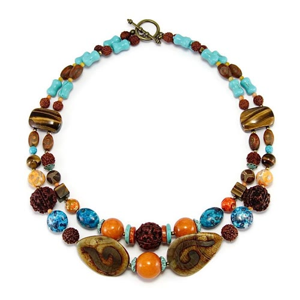
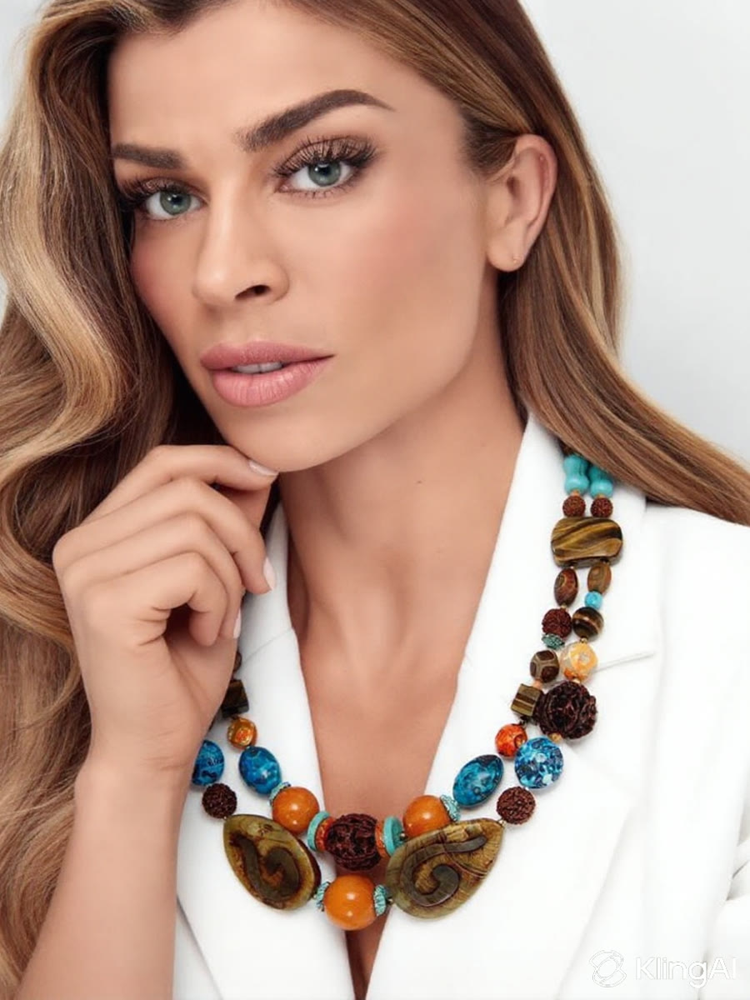
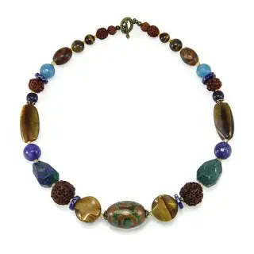
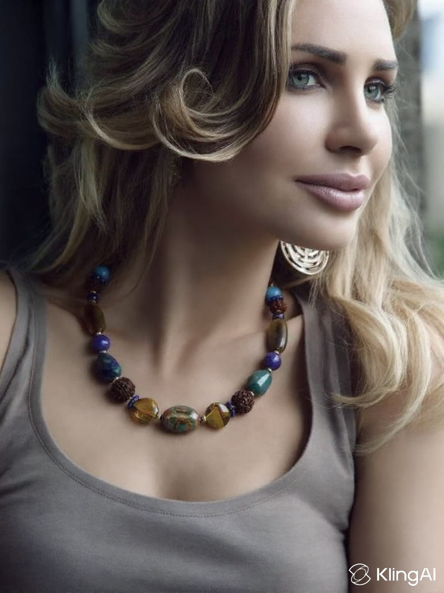

Беру готовое фото модели в украшении и делаю короткий вертикальный ролик: модель моргает, чуть поворачивает голову, улыбается, поправляет волосы. Камера стоит, украшение остаётся тем же, что на фото.
Ролики ниже по 5 секунд. Видео запускается само, звук не нужен.
Украшение

Фото для карточки

Ролик 900×1200
Модель моргает, слегка наклоняет голову и подносит руку к колье. Бусины и застёжка не меняются от кадра к кадру.
Украшение

Фото для карточки

Ролик 900×1200
Поворот к камере, лёгкая улыбка, волосы двигаются как от сквозняка. Свет у окна сохраняется весь ролик.
В этих демо фото модели тоже сгенерировано: я сам «надел» колье на модель по фото товара. В вашем заказе фото готовые, так что сразу делаю видео. Логотип KlingAI в углу есть только в демо, рабочие ролики идут без него.
Как работаю с потоком
Получаю фото пачкой (папка на диске, архив), имена файлов сохраняю, чтобы ролик сразу ложился к своему артикулу.
Движения подбираю под позу: где-то поворот головы, где-то рука к украшению. Одинаковой «анимации» на 9000 товаров не будет.
Каждый ролик смотрю перед сдачей. Если украшение «поплыло» или руки странные, перегенерирую за свой счёт.
Отдаю mp4 H.264, 900×1200, без звука и без водяных знаков.
Что предлагаю для старта
Тест на 5–10 ваших фото, чтобы вы оценили качество на своём ассортименте.
Дальше партии по 100–500 роликов с понятным сроком на каждую.
Длина 7 секунд, движения и темп можно скорректировать по вашему примеру.